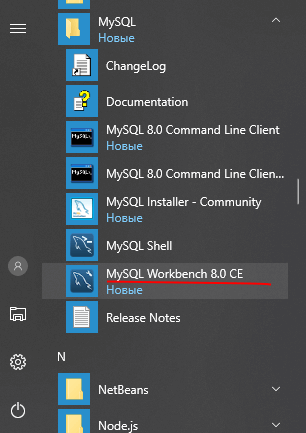
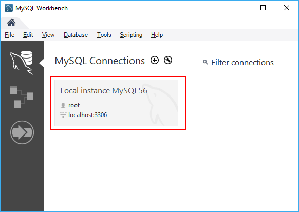
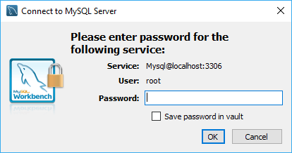
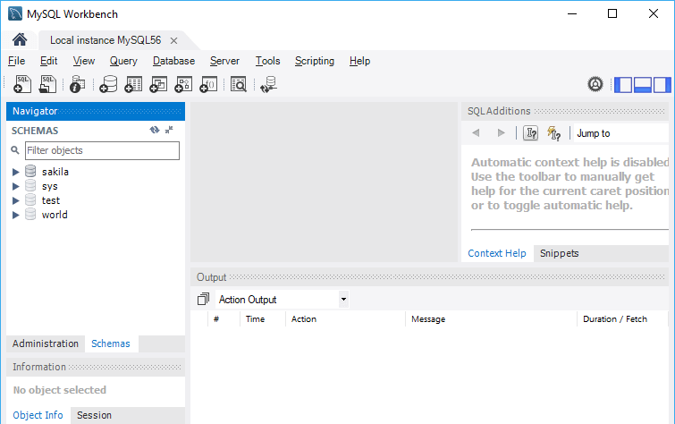
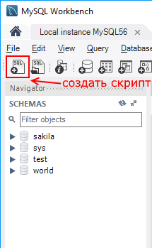
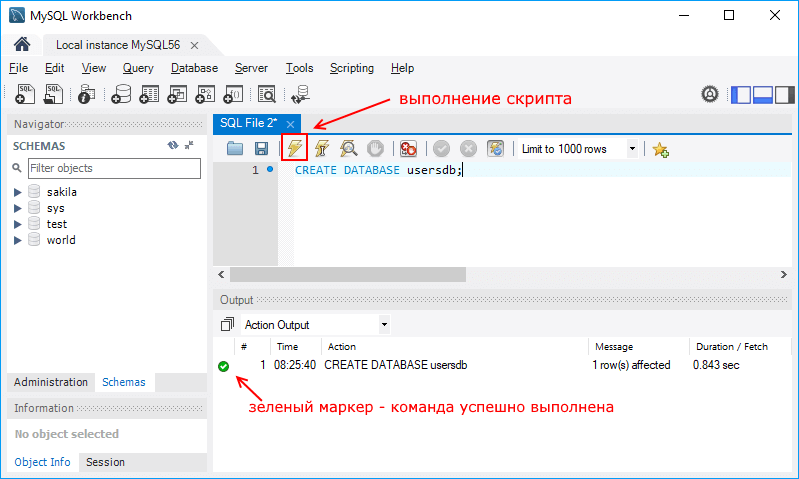

Графический клиент MySQL Workbench
Для упрощения работы с сервером MySQL в базовый комплект установки входит такой инструмент как MySQL Workbench. Он представляет графический клиент для работы с сервером, через который мы в удобном виде можем создавать, удалять, изменять базы данных и управлять ими. Так, на Windows после установки в меню Пуск мы можем найти значок программы и запустить ее:
Нам откроется следующее окно, где мы можем увидеть поле с названием запущенного локально экземпляра MySQL:
Нажмем на него, и нам отобразится окно для ввода пароля:
Здесь надо ввести пароль, который был установлен для пользователя root при установке MySQL.
После успешного логина нам откроется содержимое сервера:
В частности, в левой части в окне SCHEMAS можно увидеть доступные базы данных.
Теперь посмотрим, как мы можем выполнять в этой программе запросы к бд. Вначале создадим саму БД. Для этого нажмем над списком баз данных на значок "SQL" с плюсом:
После этого в центральной части программы откроется окно для ввода скрипта SQL. Введем в него следующую команду:
1 | CREATE DATABASE usersdb; |
Данная команда создает базу данных usersdb.
Для выполнения скрипта в панели инструментов нажмем на значок молнии:
После этого внизу программы в поле вывода в случае удачного выполнения мы увидим зеленый маркер и отчет о выполнении.
Таким образом, бд создана. Теперь добавим в нее таблицу и какие-нибудь данные. Для этого изменим код в поле ввода скрипта на следующий:
1 2 3 4 5 6 7 | USE usersdb;CREATE TABLE users ( id INTEGER AUTO_INCREMENT PRIMARY KEY, firstname VARCHAR(30), age INTEGER);INSERT INTO users (firstname, age) VALUES ('Tom', 34); |
Все команды отделяются друг от друга точкой с запятой. Первая комнда - USE устанавливает в качестве используемой базу данных usersdb, которая
была создана выше. Вторая команда - CREATE TABLE создает в бд таблицу users, в которой будет три столбца: id, firstname и age.
Третья команда - INSERT INTO добавляет в таблицу users одну строку. Для выполнения этих команд также нажмем на значок молнии.
И в конце получим все данные из таблицы users с помощью следующих команд:
1 2 | USE usersdb;SELECT * FROM users; |
Таким образом, мы можем осуществлять запросы к БД в прогамме MySQL Workbench CE.